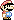

So, let's find some pictures for all these different things:
Standing around: 
Running:
Jumping:
Losing:
A world with a MarioA world with a Mario. And gravity.A world with a Mario. And gravity. And controlsA much nicer looking MarioNow at 30 frames per secondMy very own remix of the game we've been making